Climate Change Impacts, Global Warming & Vulnerability
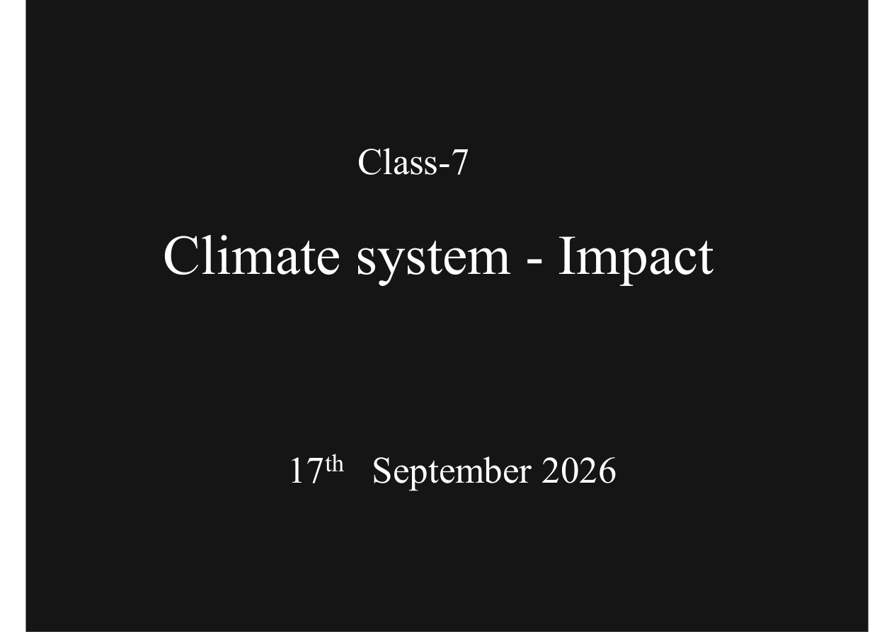
Climate system - Impact
- •Climate system - Impact 17th September 2026 Class-7
This slide presents essential concepts in Lecture 07: Climate system - Impact. Specifically, it examines Climate system - Impact 17th September 2026 Class-7. In the broader context of Climate change impacts: radiative forcing, positive ice-albedo feedback, cloud feedbacks, Stern Review economics of climate action, paleovegetation migration (Lenoir et al. 2008 upslope shift of 29m/decade), sea level rise physics (steric expansion vs ice melt), Sundarbans mangrove vulnerability and Royal Bengal Tiger extinction risk, and estuarine salinity intrusion affecting the Sundari tree (Heritiera fomes)., mastering this material is critical for analyzing ecological tradeoffs, regulatory frameworks, and exam questions on environmental system dynamics.
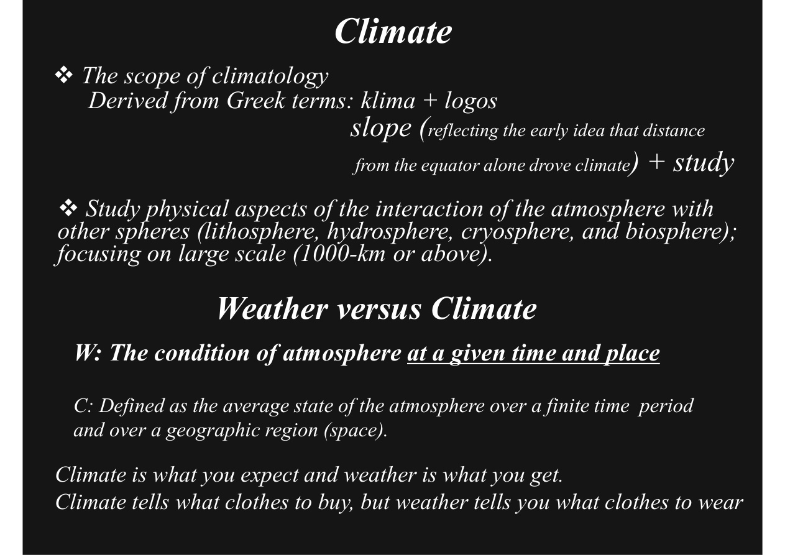
Climate
- •Climate Derived from Greek terms: klima + logos slope (reflecting the early idea that distance from the equator alone drove climate) + study
This slide presents essential concepts in Lecture 07: Climate. Specifically, it examines Climate Derived from Greek terms: klima + logos slope (reflecting the early idea that distance from the equator alone drove climate) + study. In the broader context of Climate change impacts: radiative forcing, positive ice-albedo feedback, cloud feedbacks, Stern Review economics of climate action, paleovegetation migration (Lenoir et al. 2008 upslope shift of 29m/decade), sea level rise physics (steric expansion vs ice melt), Sundarbans mangrove vulnerability and Royal Bengal Tiger extinction risk, and estuarine salinity intrusion affecting the Sundari tree (Heritiera fomes)., mastering this material is critical for analyzing ecological tradeoffs, regulatory frameworks, and exam questions on environmental system dynamics.
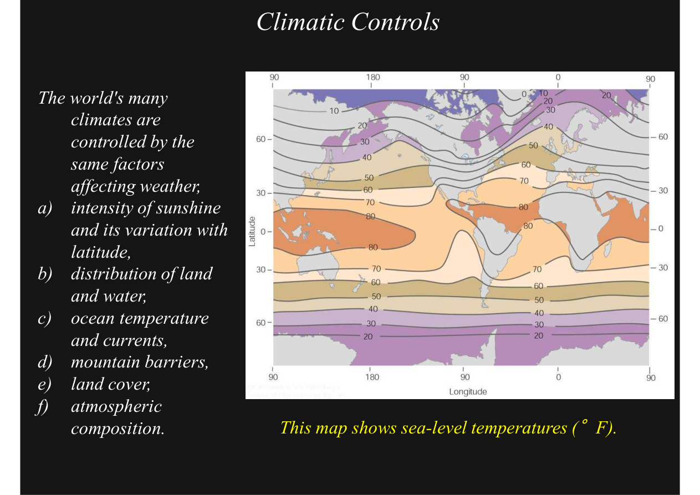
Climatic Controls
- •Climatic Controls The world's many climates are controlled by the
This slide presents essential concepts in Lecture 07: Climatic Controls. Specifically, it examines Climatic Controls The world's many climates are controlled by the. In the broader context of Climate change impacts: radiative forcing, positive ice-albedo feedback, cloud feedbacks, Stern Review economics of climate action, paleovegetation migration (Lenoir et al. 2008 upslope shift of 29m/decade), sea level rise physics (steric expansion vs ice melt), Sundarbans mangrove vulnerability and Royal Bengal Tiger extinction risk, and estuarine salinity intrusion affecting the Sundari tree (Heritiera fomes)., mastering this material is critical for analyzing ecological tradeoffs, regulatory frameworks, and exam questions on environmental system dynamics.
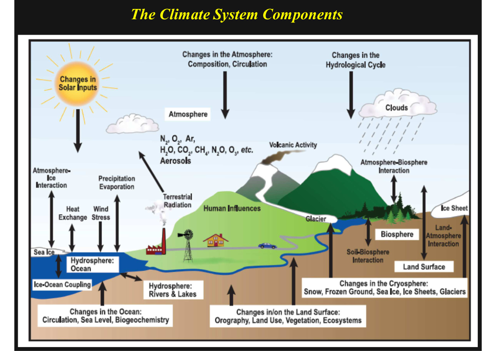
The Climate System Components
- •The Climate System Components
This slide presents essential concepts in Lecture 07: The Climate System Components. Specifically, it examines The Climate System Components. In the broader context of Climate change impacts: radiative forcing, positive ice-albedo feedback, cloud feedbacks, Stern Review economics of climate action, paleovegetation migration (Lenoir et al. 2008 upslope shift of 29m/decade), sea level rise physics (steric expansion vs ice melt), Sundarbans mangrove vulnerability and Royal Bengal Tiger extinction risk, and estuarine salinity intrusion affecting the Sundari tree (Heritiera fomes)., mastering this material is critical for analyzing ecological tradeoffs, regulatory frameworks, and exam questions on environmental system dynamics.
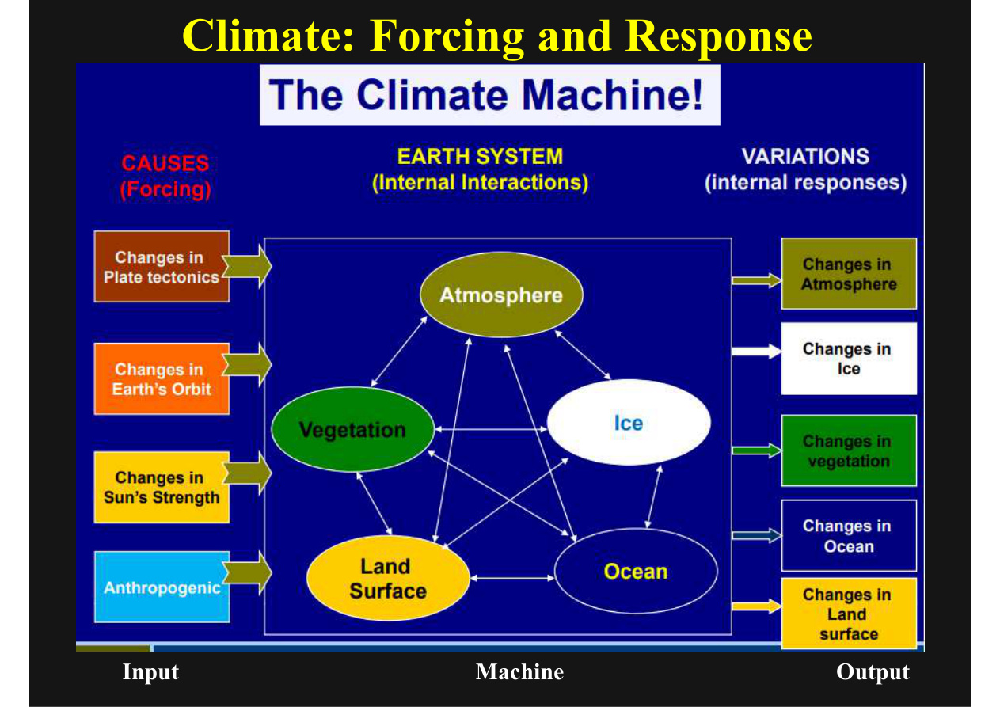
Climate: Forcing and Response
- •Climate: Forcing and Response Input Machine Output
This slide presents essential concepts in Lecture 07: Climate: Forcing and Response. Specifically, it examines Climate: Forcing and Response Input Machine Output. In the broader context of Climate change impacts: radiative forcing, positive ice-albedo feedback, cloud feedbacks, Stern Review economics of climate action, paleovegetation migration (Lenoir et al. 2008 upslope shift of 29m/decade), sea level rise physics (steric expansion vs ice melt), Sundarbans mangrove vulnerability and Royal Bengal Tiger extinction risk, and estuarine salinity intrusion affecting the Sundari tree (Heritiera fomes)., mastering this material is critical for analyzing ecological tradeoffs, regulatory frameworks, and exam questions on environmental system dynamics.
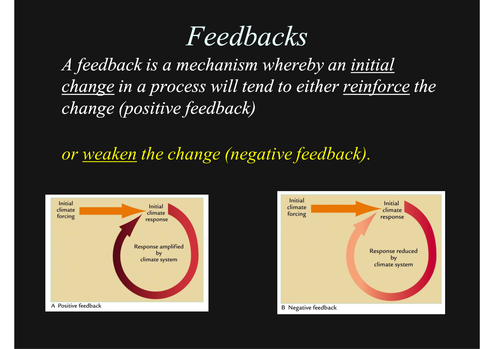
Feedbacks
- •Feedbacks Feedbacks A feedback is a mechanism whereby an initial change in a process will tend to either reinforce the
This slide presents essential concepts in Lecture 07: Feedbacks. Specifically, it examines Feedbacks Feedbacks A feedback is a mechanism whereby an initial change in a process will tend to either reinforce the. In the broader context of Climate change impacts: radiative forcing, positive ice-albedo feedback, cloud feedbacks, Stern Review economics of climate action, paleovegetation migration (Lenoir et al. 2008 upslope shift of 29m/decade), sea level rise physics (steric expansion vs ice melt), Sundarbans mangrove vulnerability and Royal Bengal Tiger extinction risk, and estuarine salinity intrusion affecting the Sundari tree (Heritiera fomes)., mastering this material is critical for analyzing ecological tradeoffs, regulatory frameworks, and exam questions on environmental system dynamics.
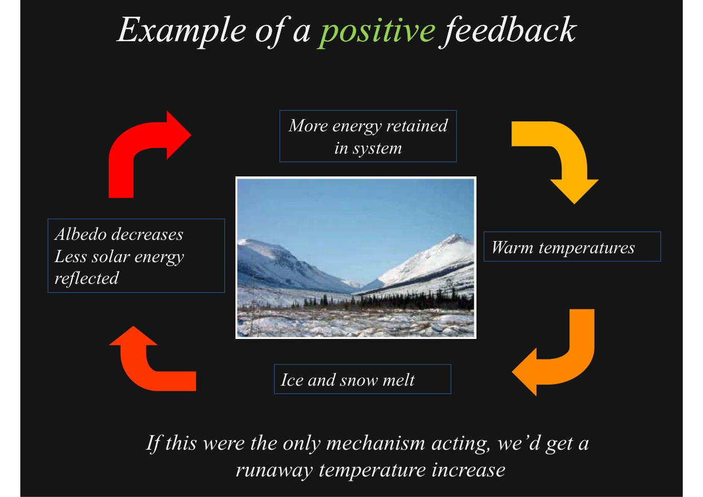
Example of a positive feedback
- •Example of a positive feedback Example of a positive feedback If this were the only mechanism acting, we’d get a runaway temperature increase
This slide presents essential concepts in Lecture 07: Example of a positive feedback. Specifically, it examines Example of a positive feedback Example of a positive feedback If this were the only mechanism acting, we’d get a runaway temperature increase. In the broader context of Climate change impacts: radiative forcing, positive ice-albedo feedback, cloud feedbacks, Stern Review economics of climate action, paleovegetation migration (Lenoir et al. 2008 upslope shift of 29m/decade), sea level rise physics (steric expansion vs ice melt), Sundarbans mangrove vulnerability and Royal Bengal Tiger extinction risk, and estuarine salinity intrusion affecting the Sundari tree (Heritiera fomes)., mastering this material is critical for analyzing ecological tradeoffs, regulatory frameworks, and exam questions on environmental system dynamics.
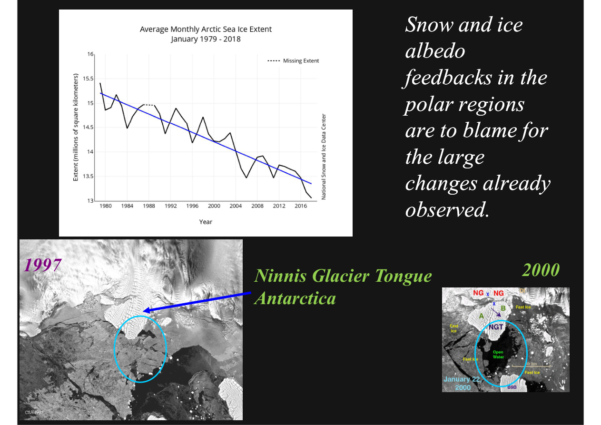
Snow and ice
- •Snow and ice albedo feedbacks in the polar regions
This slide presents essential concepts in Lecture 07: Snow and ice. Specifically, it examines Snow and ice albedo feedbacks in the polar regions. In the broader context of Climate change impacts: radiative forcing, positive ice-albedo feedback, cloud feedbacks, Stern Review economics of climate action, paleovegetation migration (Lenoir et al. 2008 upslope shift of 29m/decade), sea level rise physics (steric expansion vs ice melt), Sundarbans mangrove vulnerability and Royal Bengal Tiger extinction risk, and estuarine salinity intrusion affecting the Sundari tree (Heritiera fomes)., mastering this material is critical for analyzing ecological tradeoffs, regulatory frameworks, and exam questions on environmental system dynamics.
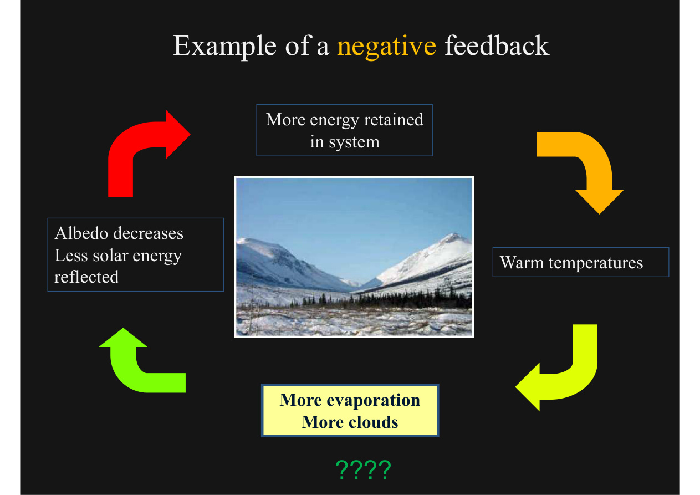
Example of a negative feedback
- •Example of a negative feedback Warm temperatures More evaporation More clouds
This slide presents essential concepts in Lecture 07: Example of a negative feedback. Specifically, it examines Example of a negative feedback Warm temperatures More evaporation More clouds. In the broader context of Climate change impacts: radiative forcing, positive ice-albedo feedback, cloud feedbacks, Stern Review economics of climate action, paleovegetation migration (Lenoir et al. 2008 upslope shift of 29m/decade), sea level rise physics (steric expansion vs ice melt), Sundarbans mangrove vulnerability and Royal Bengal Tiger extinction risk, and estuarine salinity intrusion affecting the Sundari tree (Heritiera fomes)., mastering this material is critical for analyzing ecological tradeoffs, regulatory frameworks, and exam questions on environmental system dynamics.
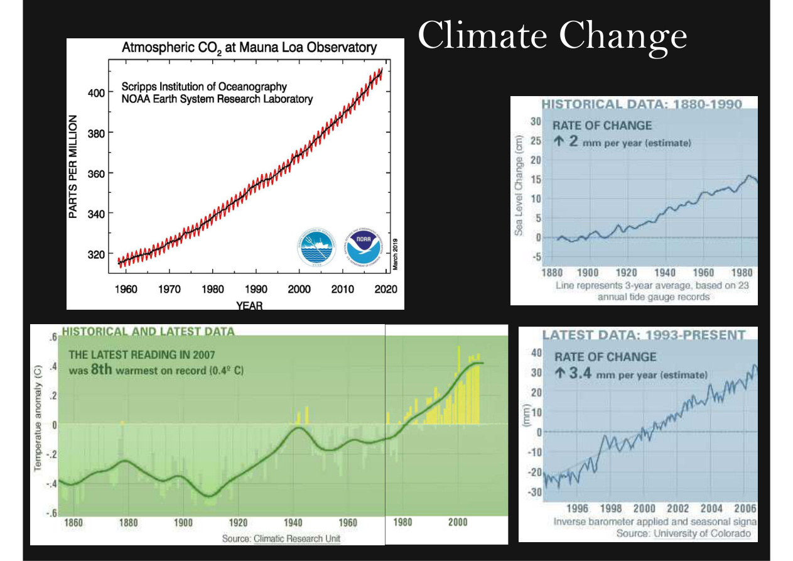
Climate Change
- •Climate Change
This visual slide in Lecture 07 illustrates core structural mechanisms and empirical data for Climate Change. It provides essential visual context within the curriculum of Climate change impacts: radiative forcing, positive ice-albedo feedback, cloud feedbacks, Stern Review economics of climate action, paleovegetation migration (Lenoir et al. 2008 upslope shift of 29m/decade), sea level rise physics (steric expansion vs ice melt), Sundarbans mangrove vulnerability and Royal Bengal Tiger extinction risk, and estuarine salinity intrusion affecting the Sundari tree (Heritiera fomes)., directly connecting theoretical principles with real-world environmental technology observations.
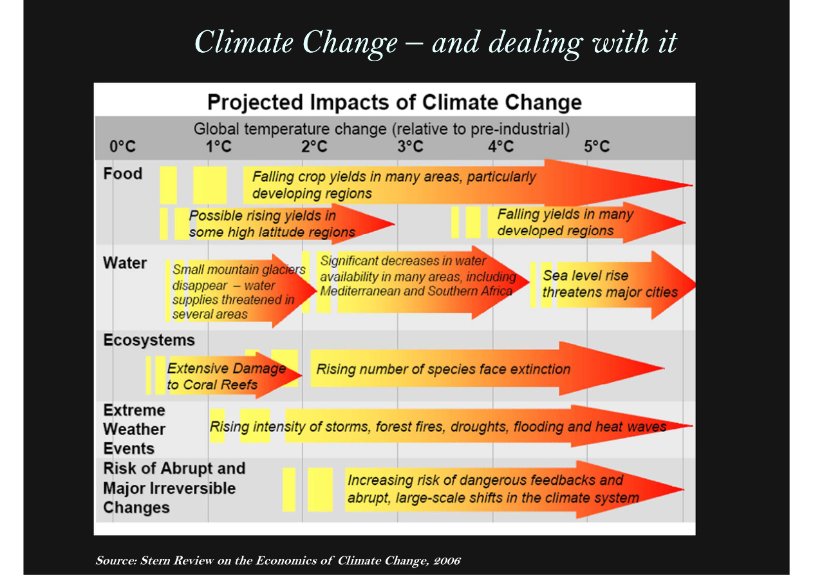
Climate Change – and dealing with it
- •Climate Change – and dealing with it Climate Change – and dealing with it Source: Stern Review on the Economics of Climate Change, 2006
This slide presents essential concepts in Lecture 07: Climate Change – and dealing with it. Specifically, it examines Climate Change – and dealing with it Climate Change – and dealing with it Source: Stern Review on the Economics of Climate Change, 2006. In the broader context of Climate change impacts: radiative forcing, positive ice-albedo feedback, cloud feedbacks, Stern Review economics of climate action, paleovegetation migration (Lenoir et al. 2008 upslope shift of 29m/decade), sea level rise physics (steric expansion vs ice melt), Sundarbans mangrove vulnerability and Royal Bengal Tiger extinction risk, and estuarine salinity intrusion affecting the Sundari tree (Heritiera fomes)., mastering this material is critical for analyzing ecological tradeoffs, regulatory frameworks, and exam questions on environmental system dynamics.
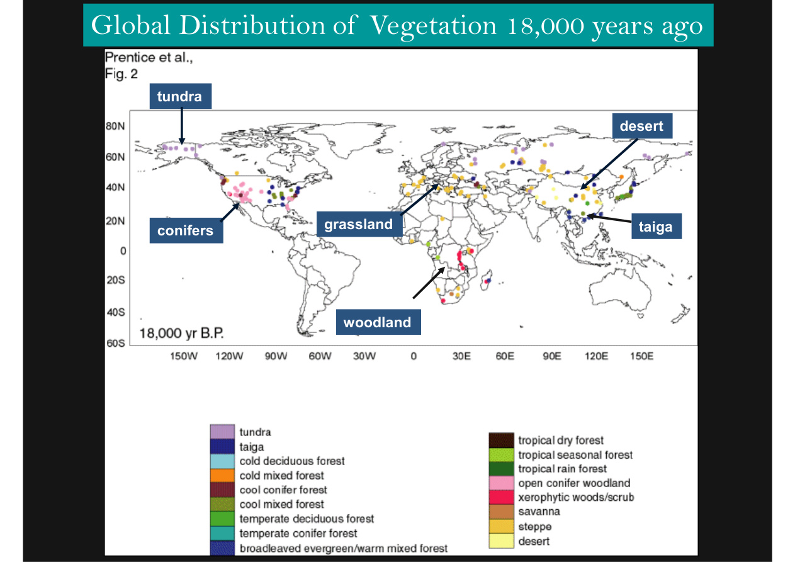
Global Distribution of Vegetation 18,000 years ago
- •Global Distribution of Vegetation 18,000 years ago conifers tundra taiga
This slide presents essential concepts in Lecture 07: Global Distribution of Vegetation 18,000 years ago. Specifically, it examines Global Distribution of Vegetation 18,000 years ago conifers tundra taiga. In the broader context of Climate change impacts: radiative forcing, positive ice-albedo feedback, cloud feedbacks, Stern Review economics of climate action, paleovegetation migration (Lenoir et al. 2008 upslope shift of 29m/decade), sea level rise physics (steric expansion vs ice melt), Sundarbans mangrove vulnerability and Royal Bengal Tiger extinction risk, and estuarine salinity intrusion affecting the Sundari tree (Heritiera fomes)., mastering this material is critical for analyzing ecological tradeoffs, regulatory frameworks, and exam questions on environmental system dynamics.
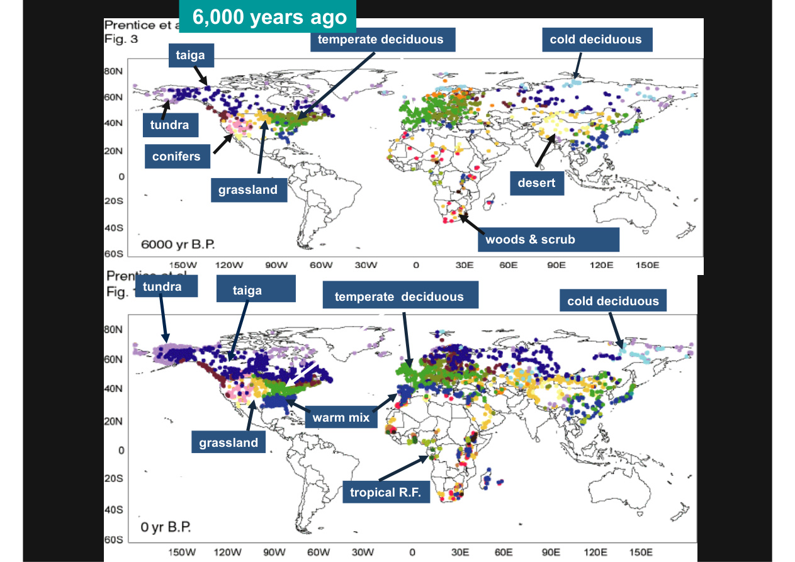
taiga
- •taiga temperate deciduous woods & scrub conifers
This slide presents essential concepts in Lecture 07: taiga. Specifically, it examines taiga temperate deciduous woods & scrub conifers. In the broader context of Climate change impacts: radiative forcing, positive ice-albedo feedback, cloud feedbacks, Stern Review economics of climate action, paleovegetation migration (Lenoir et al. 2008 upslope shift of 29m/decade), sea level rise physics (steric expansion vs ice melt), Sundarbans mangrove vulnerability and Royal Bengal Tiger extinction risk, and estuarine salinity intrusion affecting the Sundari tree (Heritiera fomes)., mastering this material is critical for analyzing ecological tradeoffs, regulatory frameworks, and exam questions on environmental system dynamics.
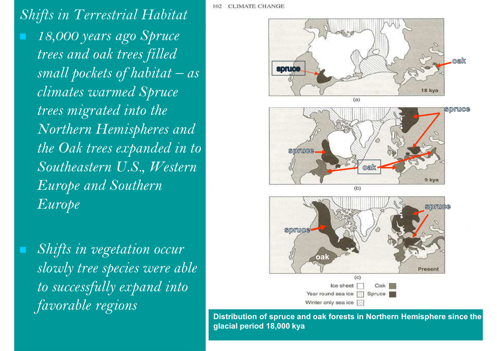
18 kya
- •18 kya 9 kya Present Distribution of spruce and oak forests in Northern Hemisphere since the
This slide presents essential concepts in Lecture 07: 18 kya. Specifically, it examines 18 kya 9 kya Present Distribution of spruce and oak forests in Northern Hemisphere since the. In the broader context of Climate change impacts: radiative forcing, positive ice-albedo feedback, cloud feedbacks, Stern Review economics of climate action, paleovegetation migration (Lenoir et al. 2008 upslope shift of 29m/decade), sea level rise physics (steric expansion vs ice melt), Sundarbans mangrove vulnerability and Royal Bengal Tiger extinction risk, and estuarine salinity intrusion affecting the Sundari tree (Heritiera fomes)., mastering this material is critical for analyzing ecological tradeoffs, regulatory frameworks, and exam questions on environmental system dynamics.
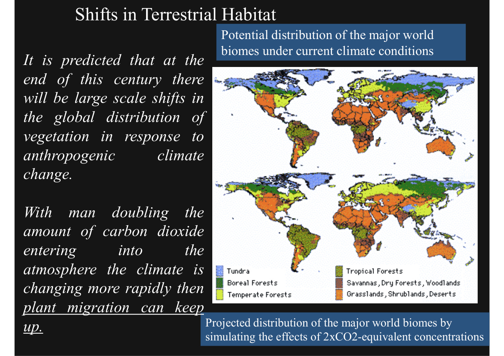
Potential distribution of the major world
- •Potential distribution of the major world biomes under current climate conditions Projected distribution of the major world biomes by simulating the effects of 2xCO2-equivalent concentrations
This slide presents essential concepts in Lecture 07: Potential distribution of the major world. Specifically, it examines Potential distribution of the major world biomes under current climate conditions Projected distribution of the major world biomes by simulating the effects of 2xCO2-equivalent concentrations. In the broader context of Climate change impacts: radiative forcing, positive ice-albedo feedback, cloud feedbacks, Stern Review economics of climate action, paleovegetation migration (Lenoir et al. 2008 upslope shift of 29m/decade), sea level rise physics (steric expansion vs ice melt), Sundarbans mangrove vulnerability and Royal Bengal Tiger extinction risk, and estuarine salinity intrusion affecting the Sundari tree (Heritiera fomes)., mastering this material is critical for analyzing ecological tradeoffs, regulatory frameworks, and exam questions on environmental system dynamics.
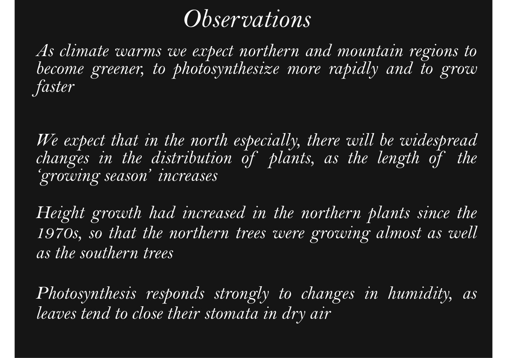
As climate warms we expect northern and mountain regions to
- •As climate warms we expect northern and mountain regions to become greener, to photosynthesize more rapidly and to grow faster We expect that in the north especially, there will be widespread
This slide presents essential concepts in Lecture 07: As climate warms we expect northern and mountain regions to. Specifically, it examines As climate warms we expect northern and mountain regions to become greener, to photosynthesize more rapidly and to grow faster We expect that in the north especially, there will be widespread. In the broader context of Climate change impacts: radiative forcing, positive ice-albedo feedback, cloud feedbacks, Stern Review economics of climate action, paleovegetation migration (Lenoir et al. 2008 upslope shift of 29m/decade), sea level rise physics (steric expansion vs ice melt), Sundarbans mangrove vulnerability and Royal Bengal Tiger extinction risk, and estuarine salinity intrusion affecting the Sundari tree (Heritiera fomes)., mastering this material is critical for analyzing ecological tradeoffs, regulatory frameworks, and exam questions on environmental system dynamics.
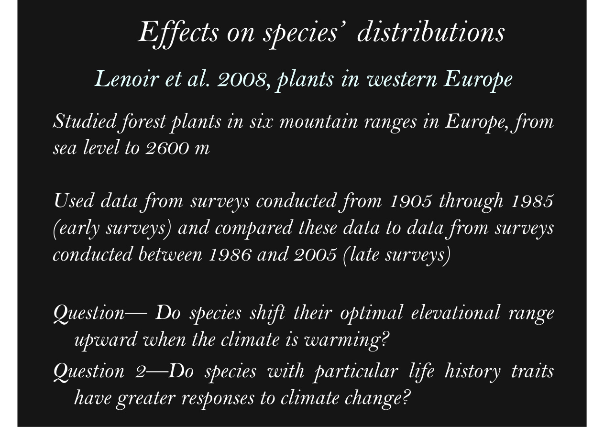
Effects on species’ distributions
- •Effects on species’ distributions Lenoir et al. 2008, plants in western Europe Lenoir et al. 2008, plants in western Europe Studied forest plants in six mountain ranges in Europe, from
This slide presents essential concepts in Lecture 07: Effects on species’ distributions. Specifically, it examines Effects on species’ distributions Lenoir et al. 2008, plants in western Europe Lenoir et al. 2008, plants in western Europe Studied forest plants in six mountain ranges in Europe, from. In the broader context of Climate change impacts: radiative forcing, positive ice-albedo feedback, cloud feedbacks, Stern Review economics of climate action, paleovegetation migration (Lenoir et al. 2008 upslope shift of 29m/decade), sea level rise physics (steric expansion vs ice melt), Sundarbans mangrove vulnerability and Royal Bengal Tiger extinction risk, and estuarine salinity intrusion affecting the Sundari tree (Heritiera fomes)., mastering this material is critical for analyzing ecological tradeoffs, regulatory frameworks, and exam questions on environmental system dynamics.
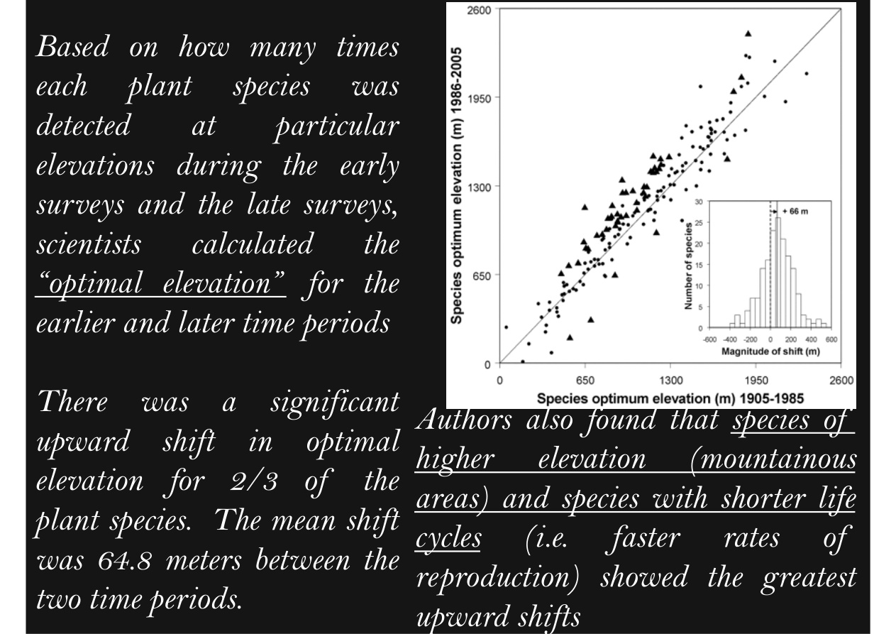
Based on how many times
- •Based on how many times each plant species
This slide presents essential concepts in Lecture 07: Based on how many times. Specifically, it examines Based on how many times each plant species. In the broader context of Climate change impacts: radiative forcing, positive ice-albedo feedback, cloud feedbacks, Stern Review economics of climate action, paleovegetation migration (Lenoir et al. 2008 upslope shift of 29m/decade), sea level rise physics (steric expansion vs ice melt), Sundarbans mangrove vulnerability and Royal Bengal Tiger extinction risk, and estuarine salinity intrusion affecting the Sundari tree (Heritiera fomes)., mastering this material is critical for analyzing ecological tradeoffs, regulatory frameworks, and exam questions on environmental system dynamics.
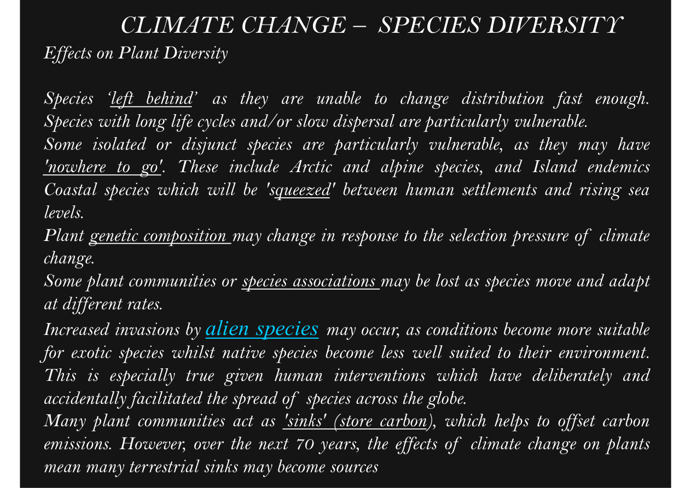
CLIMATE CHANGE – SPECIES DIVERSITY
- •CLIMATE CHANGE – SPECIES DIVERSITY Effects on Plant Diversity Species ‘left behind’ as they are unable to change distribution fast enough. Species with long life cycles and/or slow dispersal are particularly vulnerable.
This slide presents essential concepts in Lecture 07: CLIMATE CHANGE – SPECIES DIVERSITY. Specifically, it examines CLIMATE CHANGE – SPECIES DIVERSITY Effects on Plant Diversity Species ‘left behind’ as they are unable to change distribution fast enough. Species with long life cycles and/or slow dispersal are particularly vulnerable.. In the broader context of Climate change impacts: radiative forcing, positive ice-albedo feedback, cloud feedbacks, Stern Review economics of climate action, paleovegetation migration (Lenoir et al. 2008 upslope shift of 29m/decade), sea level rise physics (steric expansion vs ice melt), Sundarbans mangrove vulnerability and Royal Bengal Tiger extinction risk, and estuarine salinity intrusion affecting the Sundari tree (Heritiera fomes)., mastering this material is critical for analyzing ecological tradeoffs, regulatory frameworks, and exam questions on environmental system dynamics.
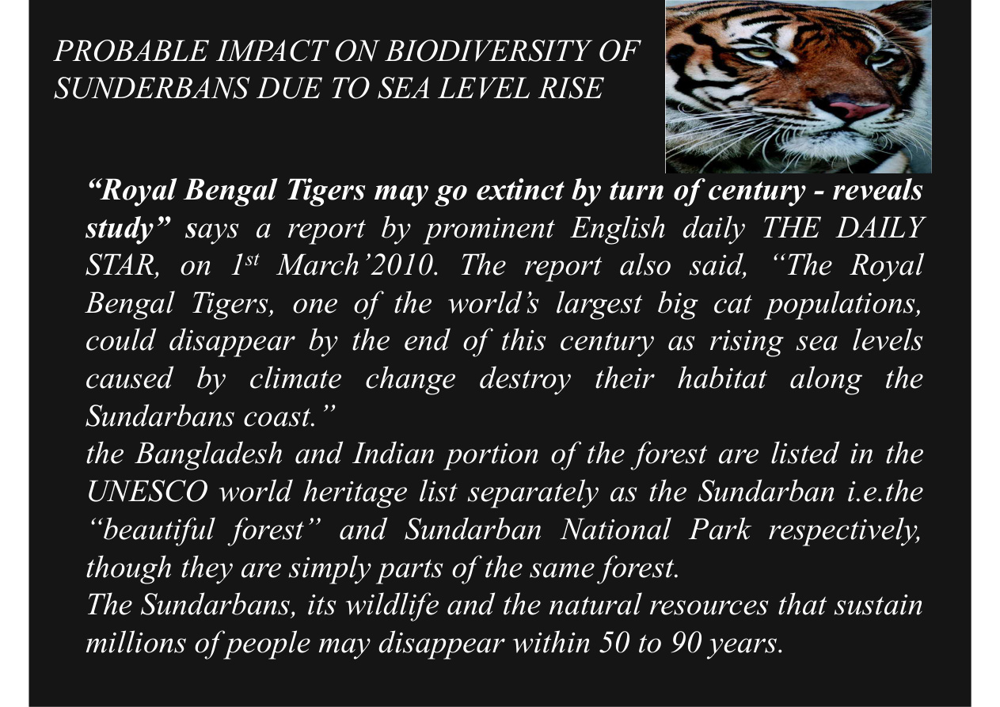
PROBABLE IMPACT ON BIODIVERSITY OF
- •PROBABLE IMPACT ON BIODIVERSITY OF SUNDERBANS DUE TO SEA LEVEL RISE “Royal Bengal Tigers may go extinct by turn of century - reveals study” says a report by prominent English daily THE DAILY
This slide presents essential concepts in Lecture 07: PROBABLE IMPACT ON BIODIVERSITY OF. Specifically, it examines PROBABLE IMPACT ON BIODIVERSITY OF SUNDERBANS DUE TO SEA LEVEL RISE “Royal Bengal Tigers may go extinct by turn of century - reveals study” says a report by prominent English daily THE DAILY. In the broader context of Climate change impacts: radiative forcing, positive ice-albedo feedback, cloud feedbacks, Stern Review economics of climate action, paleovegetation migration (Lenoir et al. 2008 upslope shift of 29m/decade), sea level rise physics (steric expansion vs ice melt), Sundarbans mangrove vulnerability and Royal Bengal Tiger extinction risk, and estuarine salinity intrusion affecting the Sundari tree (Heritiera fomes)., mastering this material is critical for analyzing ecological tradeoffs, regulatory frameworks, and exam questions on environmental system dynamics.
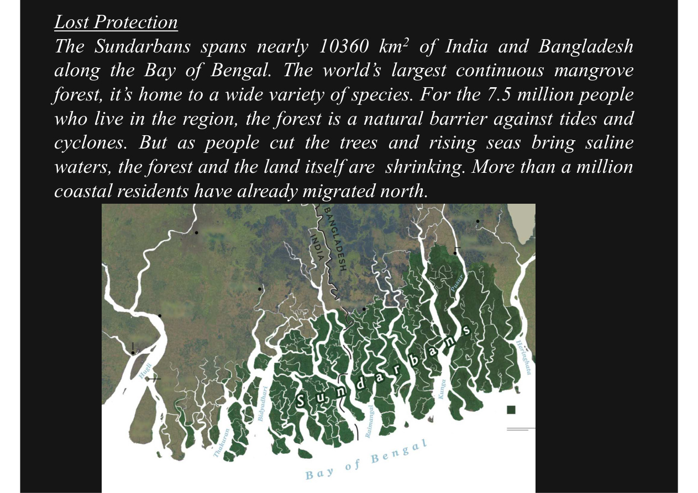
Lost Protection
- •Lost Protection The Sundarbans spans nearly 10360 km2 of India and Bangladesh along the Bay of Bengal. The world’s largest continuous mangrove forest, it’s home to a wide variety of species. For the 7.5 million people
This slide presents essential concepts in Lecture 07: Lost Protection. Specifically, it examines Lost Protection The Sundarbans spans nearly 10360 km2 of India and Bangladesh along the Bay of Bengal. The world’s largest continuous mangrove forest, it’s home to a wide variety of species. For the 7.5 million people. In the broader context of Climate change impacts: radiative forcing, positive ice-albedo feedback, cloud feedbacks, Stern Review economics of climate action, paleovegetation migration (Lenoir et al. 2008 upslope shift of 29m/decade), sea level rise physics (steric expansion vs ice melt), Sundarbans mangrove vulnerability and Royal Bengal Tiger extinction risk, and estuarine salinity intrusion affecting the Sundari tree (Heritiera fomes)., mastering this material is critical for analyzing ecological tradeoffs, regulatory frameworks, and exam questions on environmental system dynamics.
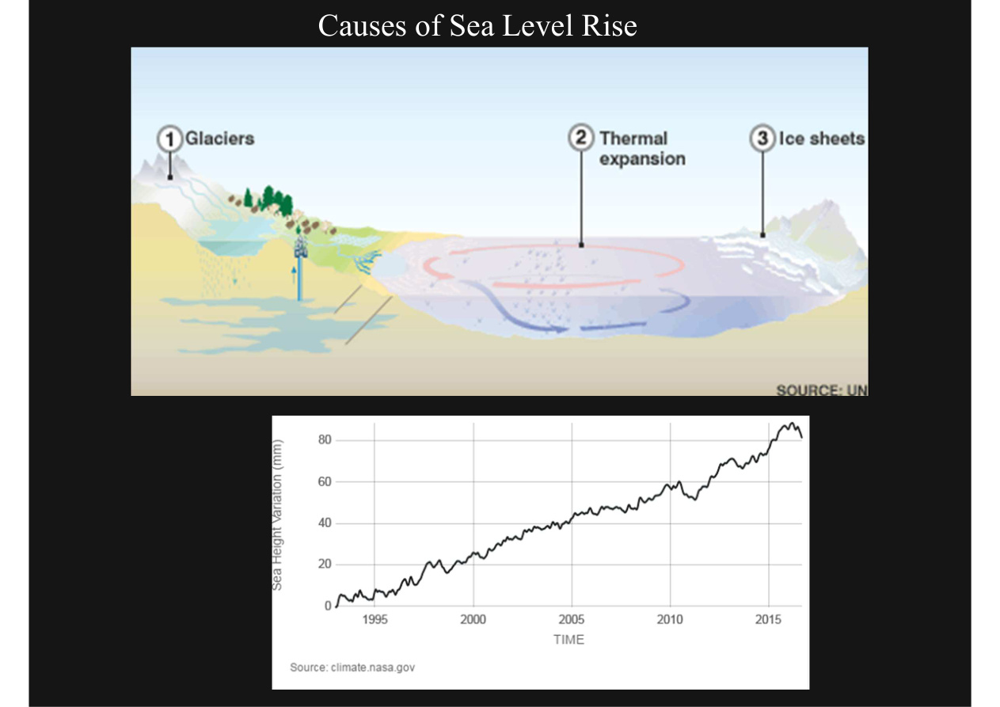
Causes of Sea Level Rise
- •Causes of Sea Level Rise
This slide presents essential concepts in Lecture 07: Causes of Sea Level Rise. Specifically, it examines Causes of Sea Level Rise. In the broader context of Climate change impacts: radiative forcing, positive ice-albedo feedback, cloud feedbacks, Stern Review economics of climate action, paleovegetation migration (Lenoir et al. 2008 upslope shift of 29m/decade), sea level rise physics (steric expansion vs ice melt), Sundarbans mangrove vulnerability and Royal Bengal Tiger extinction risk, and estuarine salinity intrusion affecting the Sundari tree (Heritiera fomes)., mastering this material is critical for analyzing ecological tradeoffs, regulatory frameworks, and exam questions on environmental system dynamics.
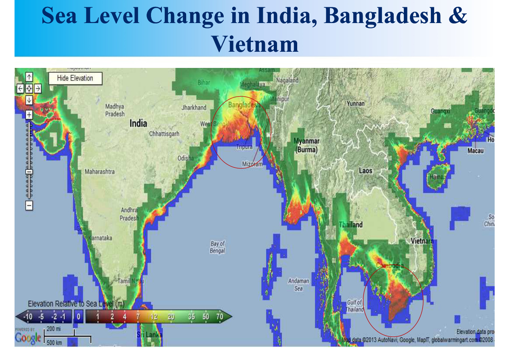
Sea Level Change in India, Bangladesh &
- •Sea Level Change in India, Bangladesh & Vietnam Sea Level Change in India, Bangladesh & Vietnam
This slide presents essential concepts in Lecture 07: Sea Level Change in India, Bangladesh &. Specifically, it examines Sea Level Change in India, Bangladesh & Vietnam Sea Level Change in India, Bangladesh & Vietnam. In the broader context of Climate change impacts: radiative forcing, positive ice-albedo feedback, cloud feedbacks, Stern Review economics of climate action, paleovegetation migration (Lenoir et al. 2008 upslope shift of 29m/decade), sea level rise physics (steric expansion vs ice melt), Sundarbans mangrove vulnerability and Royal Bengal Tiger extinction risk, and estuarine salinity intrusion affecting the Sundari tree (Heritiera fomes)., mastering this material is critical for analyzing ecological tradeoffs, regulatory frameworks, and exam questions on environmental system dynamics.
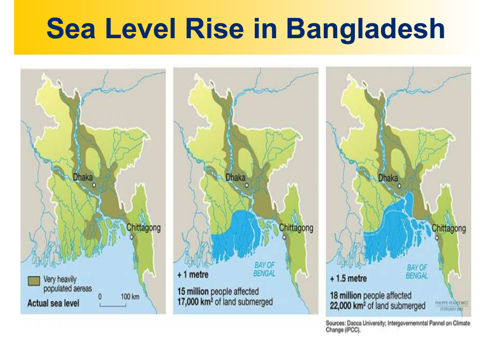
Sea Level Rise in Bangladesh
- •Sea Level Rise in Bangladesh Sea Level Rise in Bangladesh
This slide presents essential concepts in Lecture 07: Sea Level Rise in Bangladesh. Specifically, it examines Sea Level Rise in Bangladesh Sea Level Rise in Bangladesh. In the broader context of Climate change impacts: radiative forcing, positive ice-albedo feedback, cloud feedbacks, Stern Review economics of climate action, paleovegetation migration (Lenoir et al. 2008 upslope shift of 29m/decade), sea level rise physics (steric expansion vs ice melt), Sundarbans mangrove vulnerability and Royal Bengal Tiger extinction risk, and estuarine salinity intrusion affecting the Sundari tree (Heritiera fomes)., mastering this material is critical for analyzing ecological tradeoffs, regulatory frameworks, and exam questions on environmental system dynamics.
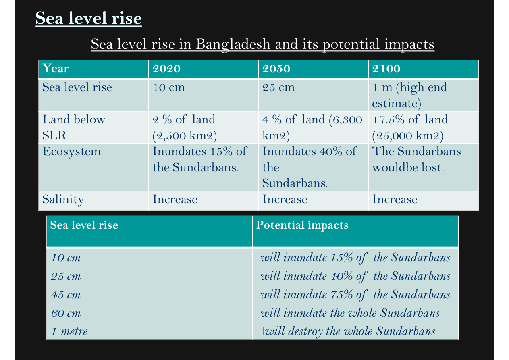
Sea level rise
- •Sea level rise Sea level rise 2100 2050
This slide presents essential concepts in Lecture 07: Sea level rise. Specifically, it examines Sea level rise Sea level rise 2100 2050. In the broader context of Climate change impacts: radiative forcing, positive ice-albedo feedback, cloud feedbacks, Stern Review economics of climate action, paleovegetation migration (Lenoir et al. 2008 upslope shift of 29m/decade), sea level rise physics (steric expansion vs ice melt), Sundarbans mangrove vulnerability and Royal Bengal Tiger extinction risk, and estuarine salinity intrusion affecting the Sundari tree (Heritiera fomes)., mastering this material is critical for analyzing ecological tradeoffs, regulatory frameworks, and exam questions on environmental system dynamics.
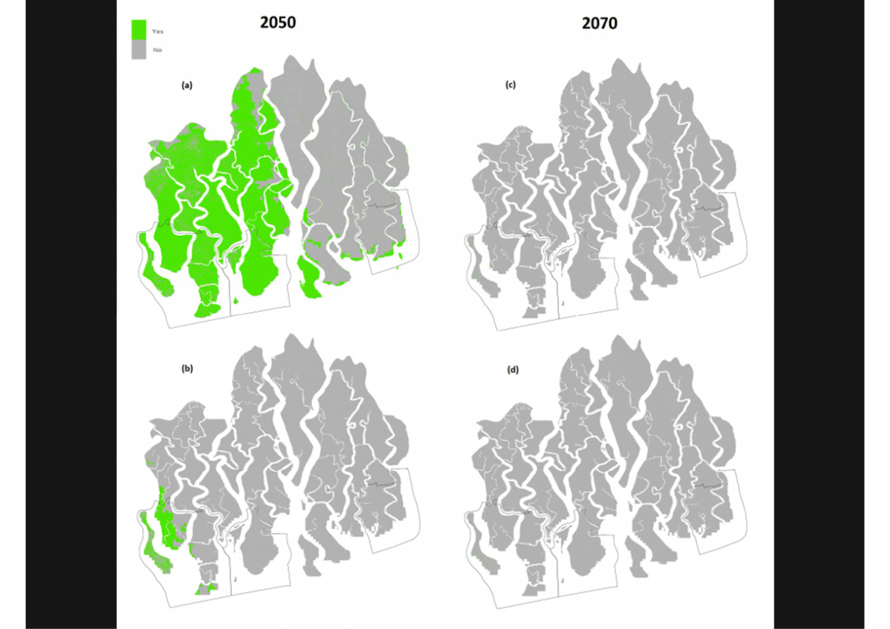
Slide 26
Visual figure / diagram presentation slide. Review the high-resolution render on the left.
This visual slide in Lecture 07 illustrates core structural mechanisms and empirical data for Slide 26. It provides essential visual context within the curriculum of Climate change impacts: radiative forcing, positive ice-albedo feedback, cloud feedbacks, Stern Review economics of climate action, paleovegetation migration (Lenoir et al. 2008 upslope shift of 29m/decade), sea level rise physics (steric expansion vs ice melt), Sundarbans mangrove vulnerability and Royal Bengal Tiger extinction risk, and estuarine salinity intrusion affecting the Sundari tree (Heritiera fomes)., directly connecting theoretical principles with real-world environmental technology observations.
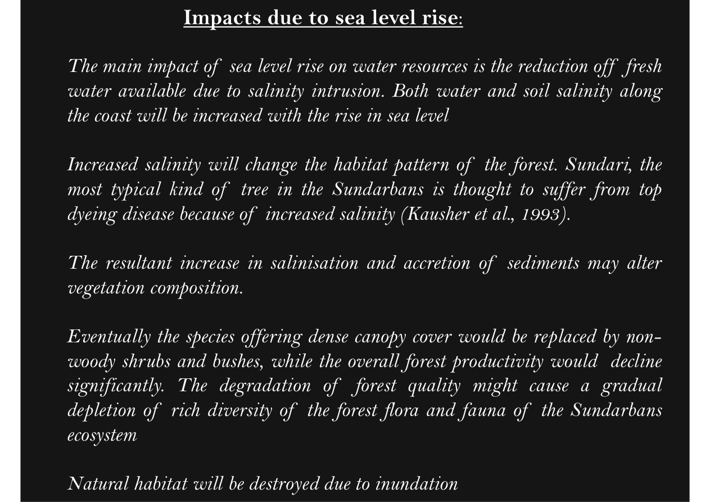
The main impact of sea level rise on water resources is the re...
- •The main impact of sea level rise on water resources is the reduction off fresh water available due to salinity intrusion. Both water and soil salinity along the coast will be increased with the rise in sea level Increased salinity will change the habitat pattern of the forest. Sundari, the
This slide presents essential concepts in Lecture 07: The main impact of sea level rise on water resources is the re.... Specifically, it examines The main impact of sea level rise on water resources is the reduction off fresh water available due to salinity intrusion. Both water and soil salinity along the coast will be increased with the rise in sea level Increased salinity will change the habitat pattern of the forest. Sundari, the. In the broader context of Climate change impacts: radiative forcing, positive ice-albedo feedback, cloud feedbacks, Stern Review economics of climate action, paleovegetation migration (Lenoir et al. 2008 upslope shift of 29m/decade), sea level rise physics (steric expansion vs ice melt), Sundarbans mangrove vulnerability and Royal Bengal Tiger extinction risk, and estuarine salinity intrusion affecting the Sundari tree (Heritiera fomes)., mastering this material is critical for analyzing ecological tradeoffs, regulatory frameworks, and exam questions on environmental system dynamics.
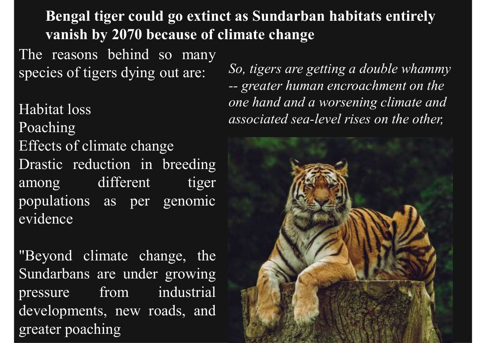
Bengal tiger could go extinct as Sundarban habitats entirely
- •Bengal tiger could go extinct as Sundarban habitats entirely vanish by 2070 because of climate change The reasons behind so many species of tigers dying out are:
This slide presents essential concepts in Lecture 07: Bengal tiger could go extinct as Sundarban habitats entirely. Specifically, it examines Bengal tiger could go extinct as Sundarban habitats entirely vanish by 2070 because of climate change The reasons behind so many species of tigers dying out are:. In the broader context of Climate change impacts: radiative forcing, positive ice-albedo feedback, cloud feedbacks, Stern Review economics of climate action, paleovegetation migration (Lenoir et al. 2008 upslope shift of 29m/decade), sea level rise physics (steric expansion vs ice melt), Sundarbans mangrove vulnerability and Royal Bengal Tiger extinction risk, and estuarine salinity intrusion affecting the Sundari tree (Heritiera fomes)., mastering this material is critical for analyzing ecological tradeoffs, regulatory frameworks, and exam questions on environmental system dynamics.
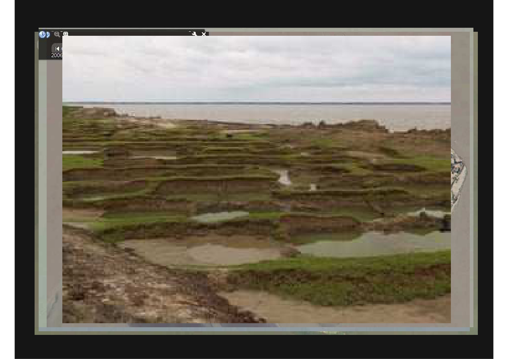
Slide 29
Visual figure / diagram presentation slide. Review the high-resolution render on the left.
This visual slide in Lecture 07 illustrates core structural mechanisms and empirical data for Slide 29. It provides essential visual context within the curriculum of Climate change impacts: radiative forcing, positive ice-albedo feedback, cloud feedbacks, Stern Review economics of climate action, paleovegetation migration (Lenoir et al. 2008 upslope shift of 29m/decade), sea level rise physics (steric expansion vs ice melt), Sundarbans mangrove vulnerability and Royal Bengal Tiger extinction risk, and estuarine salinity intrusion affecting the Sundari tree (Heritiera fomes)., directly connecting theoretical principles with real-world environmental technology observations.
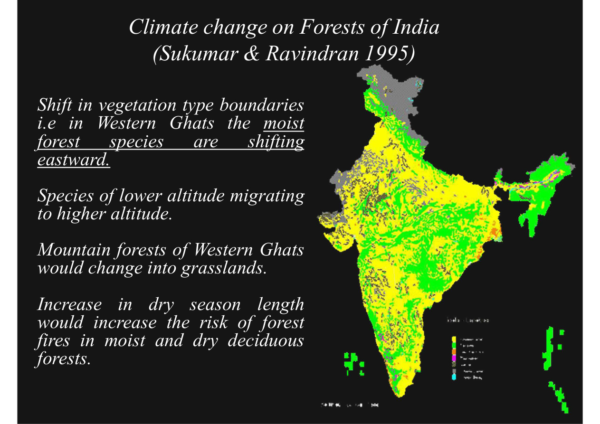
Climate change on Forests of India
- •Climate change on Forests of India (Sukumar & Ravindran 1995) Shift in vegetation type boundaries i.e in Western Ghats the moist
This slide presents essential concepts in Lecture 07: Climate change on Forests of India. Specifically, it examines Climate change on Forests of India (Sukumar & Ravindran 1995) Shift in vegetation type boundaries i.e in Western Ghats the moist. In the broader context of Climate change impacts: radiative forcing, positive ice-albedo feedback, cloud feedbacks, Stern Review economics of climate action, paleovegetation migration (Lenoir et al. 2008 upslope shift of 29m/decade), sea level rise physics (steric expansion vs ice melt), Sundarbans mangrove vulnerability and Royal Bengal Tiger extinction risk, and estuarine salinity intrusion affecting the Sundari tree (Heritiera fomes)., mastering this material is critical for analyzing ecological tradeoffs, regulatory frameworks, and exam questions on environmental system dynamics.
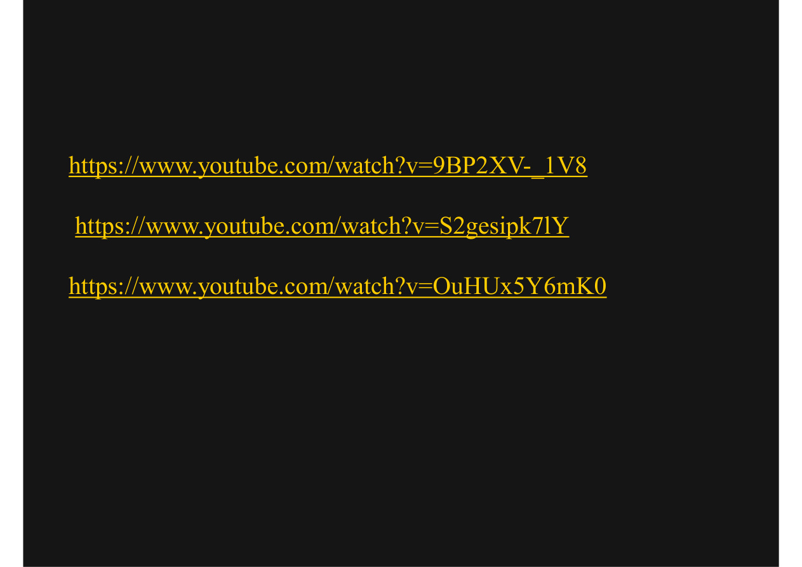
https://www.youtube.com/watch?v=9BP2XV-_1V8
Visual figure / diagram presentation slide. Review the high-resolution render on the left.
This slide presents essential concepts in Lecture 07: https://www.youtube.com/watch?v=9BP2XV-_1V8. Specifically, it examines https://www.youtube.com/watch?v=9BP2XV-_1V8 https://www.youtube.com/watch?v=S2gesipk7lY https://www.youtube.com/watch?v=. In the broader context of Climate change impacts: radiative forcing, positive ice-albedo feedback, cloud feedbacks, Stern Review economics of climate action, paleovegetation migration (Lenoir et al. 2008 upslope shift of 29m/decade), sea level rise physics (steric expansion vs ice melt), Sundarbans mangrove vulnerability and Royal Bengal Tiger extinction risk, and estuarine salinity intrusion affecting the Sundari tree (Heritiera fomes)., mastering this material is critical for analyzing ecological tradeoffs, regulatory frameworks, and exam questions on environmental system dynamics.
🌡️ Sea Level Rise & Thermal Expansion Model
Calculate global mean sea level rise driven by steric ocean warming and continental ice sheet mass discharge.
Active Recall Flashcards
Test yourself on essential slide definitions, reactions, and principles before flipping.
Exam Traps, Fallacies & Professor Emphasis Points
Common student misconceptions and subtle distinctions tested in Midsem and Endsem exams.
- ⚠️ Trap: Confusing the melting of sea ice with sea level rise. Melting of floating Arctic sea ice does NOT directly raise sea levels (Archimedes' principle). Sea level rise is driven by land-based ice sheets (Greenland, Antarctica, alpine glaciers) and thermal expansion.
- ⚠️ Exam Tip: Remember that Radiative Forcing for $CO_2$ scales logarithmically with concentration due to saturation of the central $15\,\mu\text{m}$ absorption band.
Concept Check Quiz
Instant feedback on core conceptual and quantitative questions from the lecture slides.
Complete Slide Deck Quick-Jump Gallery
Quick visual reference of all 31 slides across this lecture deck with PDF downloads.